A firmware-agnostic framework for human locomotion detection via quasi-monostatic beamforming feedback dynamics. One commodity 802.11ac access point. No driver hacking. No PHY-layer patches. No bistatic rig.
Wi-Fi-based human locomotion detection has a deployment problem, not an accuracy problem. The cause is hardware.
Most Wi-Fi sensing systems depend on Channel State Information (CSI), which demands vendor-specific drivers, firmware patches, or a multi-device bistatic setup. Although the Beamforming Feedback Matrix (BFM) is exposed by the IEEE 802.11ac standard itself, existing BFM work still assumes physically separated transmitters and receivers, which blocks residential and edge-side deployment.
We present a firmware-agnostic HLD framework that runs on a single commercial access point. It requires no driver modification and no PHY-layer patching. The framework extracts BFM signals directly from standard IEEE 802.11ac feedback frames using stock administrative utilities, removing the driver access that CSI sensing demands. A lightweight feature engineering pipeline isolates locomotion-induced perturbations from static environmental noise, handling the non-stationarity, high dimensionality, and quantization artifacts inherent to compressed beamforming.
Across 150 sessions from 5 subjects in 3 propagation environments, under a Leave-One-Subject-Out (LOSO) protocol, the model reaches 98.30% intra-environment accuracy on unseen subjects and 94.94% mean cross-environment accuracy — without firmware patching or CSI extraction.
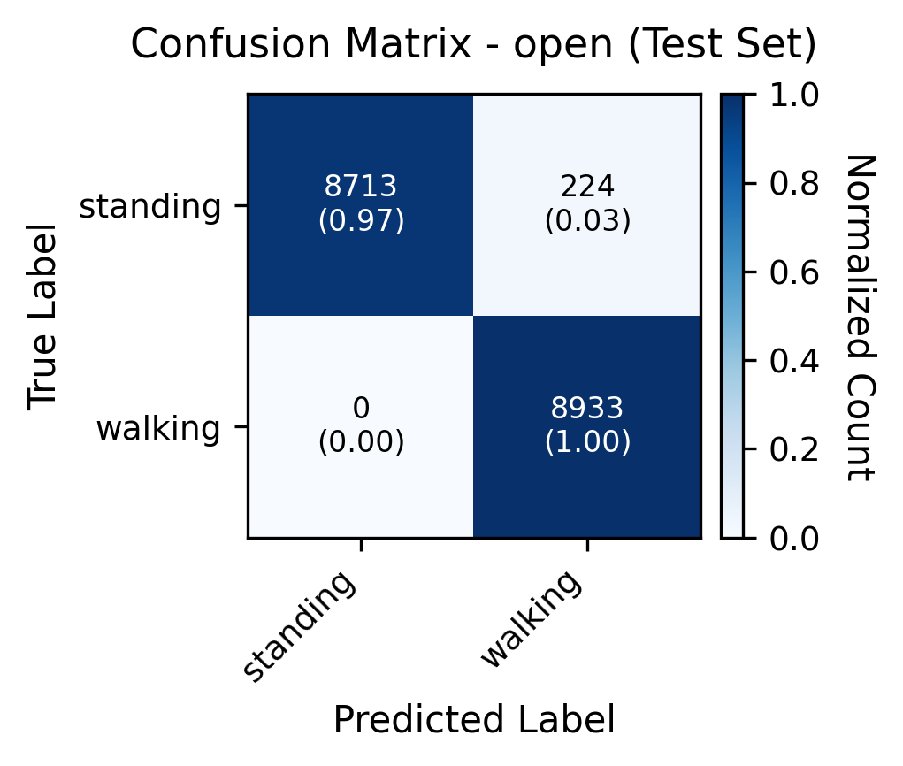
A single commercial AP carries the entire sensing function. No extra hardware. No firmware patch. No driver access.
Magnitude-based packet filtering plus a third-order Log-Mean Absolute Difference (LMAD) transform produce a linearly separable, noise-resilient feature suitable for edge inference.
94.94% mean cross-environment accuracy across 150 sessions, 5 subjects, and 3 propagation environments under a strict Leave-One-Subject-Out protocol.
A logistic regression classifier is sufficient. Reliable HLD on compressed BFM does not require deep learning, which lets us attribute the result to the signal rather than to model capacity.
A single commodity 802.11ac AP captures protocol-compliant beamforming feedback during controlled human locomotion. Packet captures are decoded to per-subcarrier complex frequency responses, from which magnitude and phase features are derived for temporal analysis and inference.
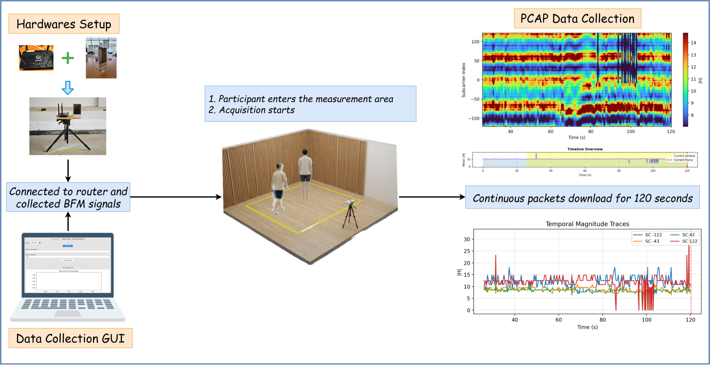
The AP emits Compressed Beamforming Feedback (CBF). We invert the Givens rotations to rebuild the 2×1 BFM for each of the 234 subcarriers from the angles φ11 and ψ21.
Dividing one antenna's coefficient by the other's cancels the time-varying singular value and the common phase, leaving one complex value per subcarrier that retains the relative amplitude and phase.
Packets with mean BFM-ratio magnitude below 5 are dropped. Below this threshold, phase reconstruction injects spurious spikes; the threshold is data-driven from a bimodal magnitude distribution with a stable valley near 5.
PCA is applied across 234 subcarriers separately to magnitude and phase. Only the first principal component is retained, producing scalar features PCAmag and PCAphase per time step. Per-modality PCA preserves the dominant energy modes of both signals.
Winsorization (100-sample window, Tukey's rule) clips outliers in place. Robust moving standardization subtracts the moving median and divides by the median absolute deviation to remove non-stationary baseline drift. The final Log-Mean Absolute Difference (LMAD) transform captures step-to-step roughness in a single scalar per modality.
The differencing order n is selected by a maximin criterion on a robust separation margin under LOSO cross-validation across the three environments. n = 3 wins the worst-case margin (2.3489) and worst-case AUC (0.9714).
Logistic Regression with L2 regularization (C = 1.0, lbfgs) maps the 2-D LMAD feature to a binary decision. Higher-capacity models (SVM, MLP) produced no consistent gains; LR is the capacity-matched choice for edge inference.
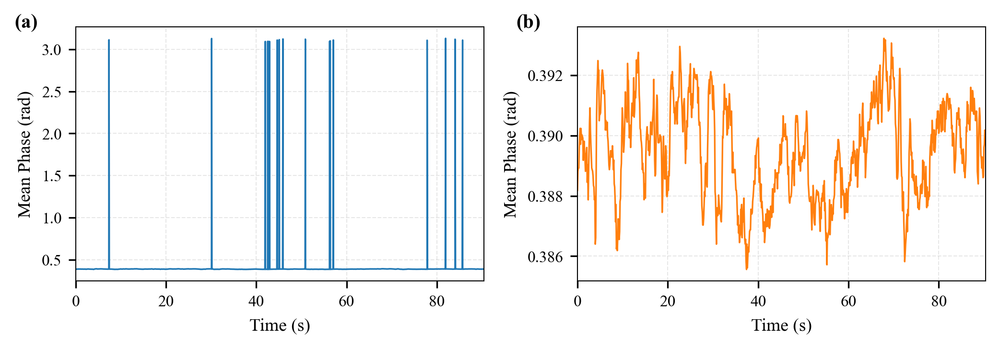
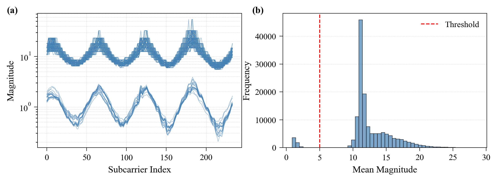
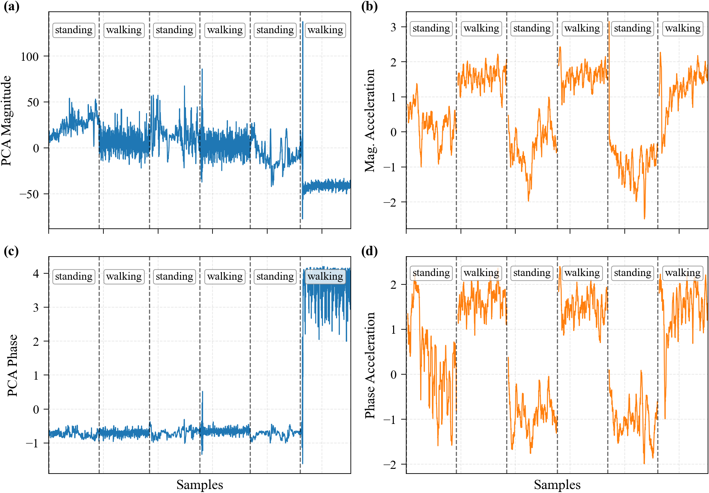
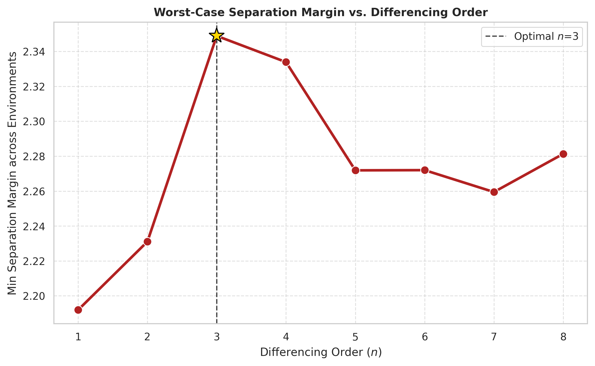
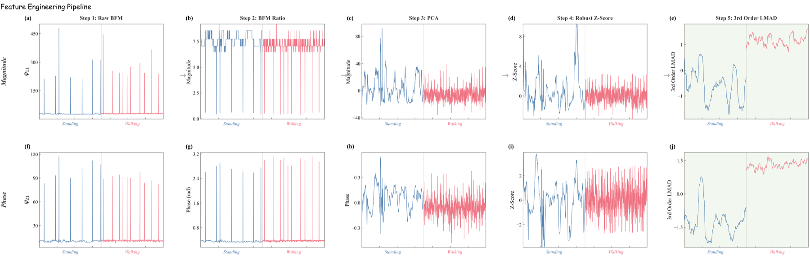
150 recording sessions across 5 subjects, 3 propagation environments, and 2 activities (walking, standing).
tcpdump capture.iperf3 -R to drive downstream traffic and trigger BFM frames.tcpdump, automatic PCAP transfer, session labeling, and BFM extraction.The three settings form a multipath gradient that stresses the BFM features across varying multipath severity and spatial selectivity.
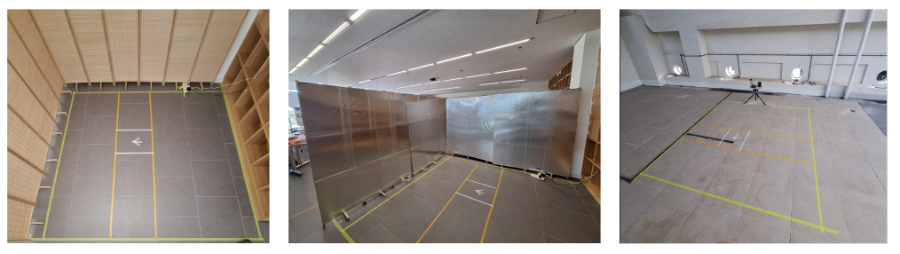
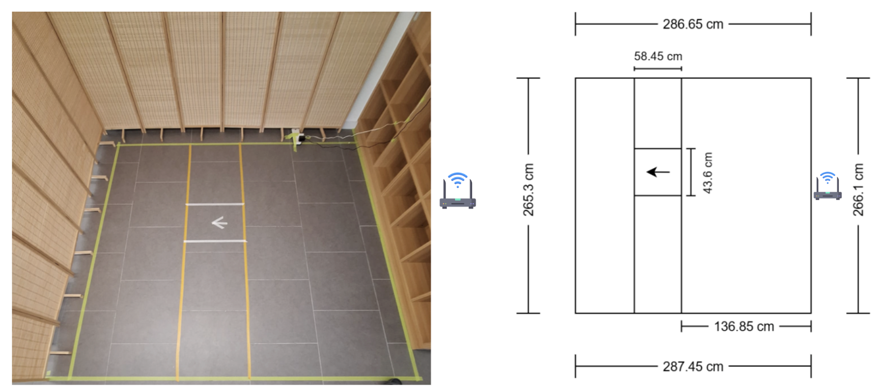
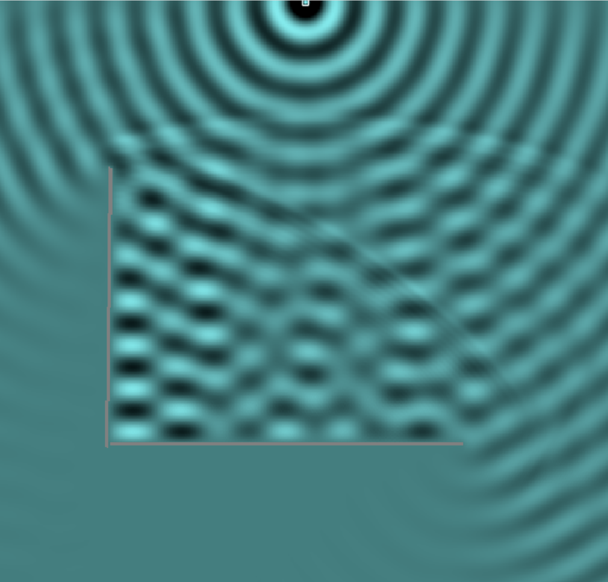
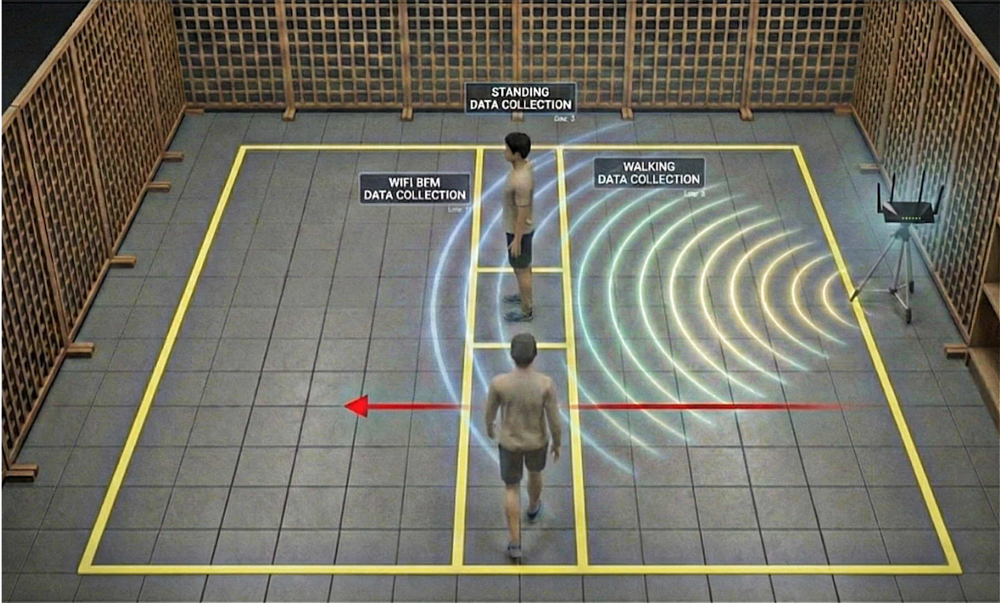
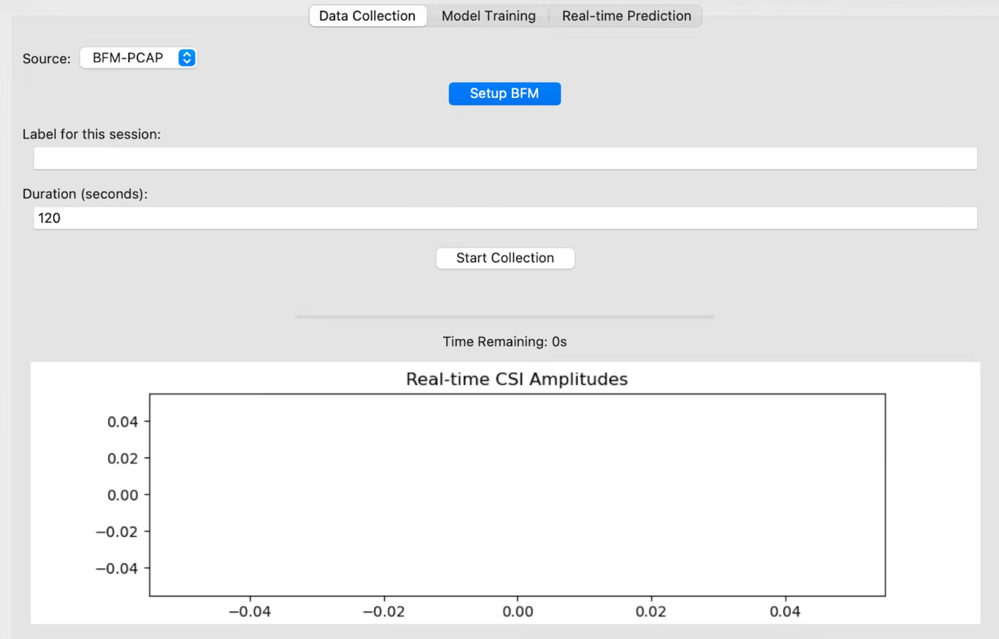
Final configuration: fused magnitude-phase features with n = 3 LMAD and a 4.0 s observation window (W = 42), evaluated on a strictly held-out cohort (Subjects D and E).
| Input modality | Intra-Env Acc. | Cross-Env Acc. |
|---|---|---|
| Phase only | 93.85% | 93.65% |
| Magnitude only | 94.06% | 94.06% |
| Fused (both) | 96.67% | 95.05% |
Magnitude tracks slow spatial attenuation; phase tracks temporal perturbation. Neither covers the full response, so fusion lifts accuracy in both regimes — with the larger absolute gain under cross-environment evaluation.
| Window W | Latency | Intra-Env | Mean Cross-Env | Worst (Open→Foil) |
|---|---|---|---|---|
| 11 samples | 1.0 s | 90.96% | 90.45% | 84.37% |
| 21 samples | 2.0 s | 93.89% | 93.70% | 90.13% |
| 42 samples | 4.0 s | 96.11% | 94.94% | 91.24% |
| 53 samples | 5.0 s | 96.67% | 95.05% | 90.94% |
| 64 samples | 6.0 s | 97.44% | 95.06% | 90.38% |
| 84 samples | 8.0 s | 98.15% | 95.28% | 88.89% |
| 106 samples | 10.0 s | 98.33% | 94.88% | 88.57% |
Worst-case cross-environment accuracy peaks at W = 42. Longer windows capture more environment-specific multipath and transfer worse, so 4.0 s is the operating point for deployment under domain shift.
| Environment | Accuracy | F1-Score |
|---|---|---|
| Nofoil | 98.06% | 0.9806 |
| Foil | 91.97% | 0.9197 |
| Open | 98.30% | 0.9830 |
| Trained on | → Nofoil | → Foil | → Open | Mean |
|---|---|---|---|---|
| Nofoil | — | 88.81% | 100.00% | 94.41% |
| Foil | 96.60% | — | 100.00% | 98.30% |
| Open | 92.96% | 91.24% | — | 92.10% |
Models trained under heavier multipath (Foil) transfer reliably to lower multipath; models trained on cleaner conditions (Open) degrade when deployed into denser multipath. This supports a train-under-stress deployment strategy.
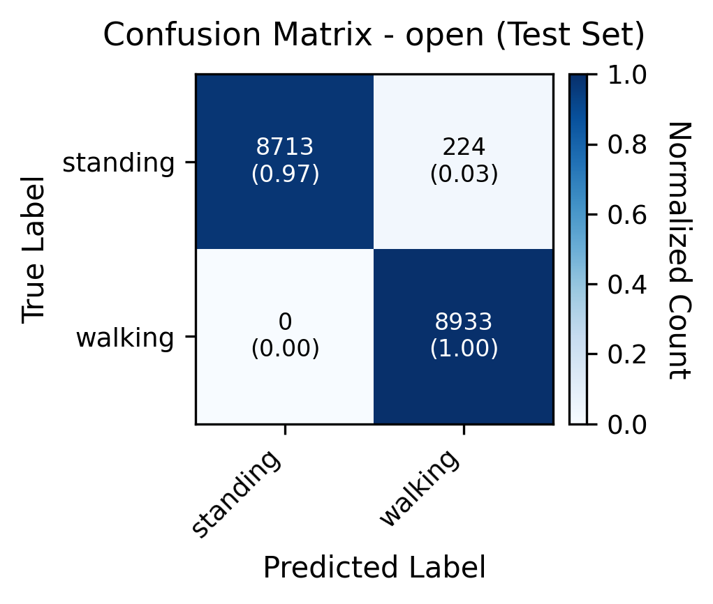
The same pipeline is shared between labeled data collection and live inference. The reference implementation lives in WiFi-Signal-Processing-HAR-POC.
Install libpcap1, tcpdump-mini, and openssh-sftp-server from the OpenWrt feed matching your architecture. Without these, capture cannot start and paramiko's downloads fail.
iw phy phy0 interface add mon0 type monitor; ip link set mon0 up
Run iperf3 -s on the AP and iperf3 -c <ap_ip> -R on the client — or use the self-ping mode (router pings its own IP at 100 Hz) for radar-like single-AP sensing.
tcpdump -i mon0 -p -w /tmp/bfm_capture -W 10 -C 1 'wlan[24] == 21'
The Python collector pulls rotated PCAPs over SFTP. tshark extracts BFM angles per packet; the decompressor inverts the Givens rotations to get the per-subcarrier complex ratio.
Magnitude-filter, PCA per modality, winsorize + robust standardize, third-order LMAD over a 4.0 s window, then logistic regression.
# Workstation
git clone https://github.com/purple-ginseng/WiFi-Signal-Processing-HAR-POC
cd WiFi-Signal-Processing-HAR-POC
pip install -r requirements.txt paramiko streamlit tensorflow
# Router (one-time, see README for package URLs)
ssh root@192.168.1.1 'opkg install /tmp/libpcap1_*.ipk \
/tmp/tcpdump-mini_*.ipk \
/tmp/openssh-sftp-server_*.ipk'
# Live page
streamlit run pages/live_activity_detection.py
# then open http://localhost:8501